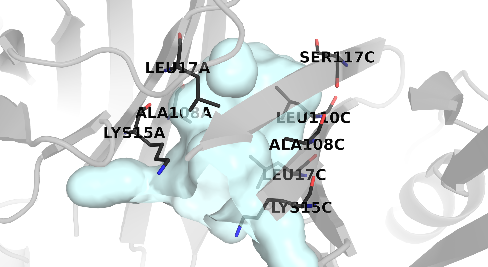
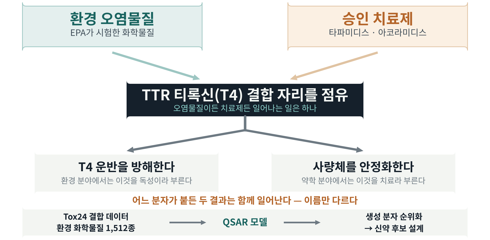
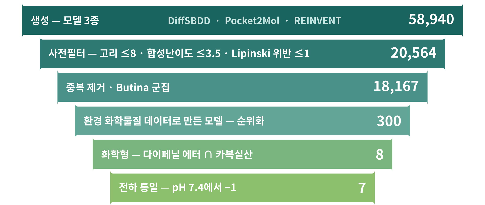
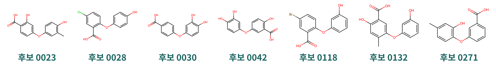
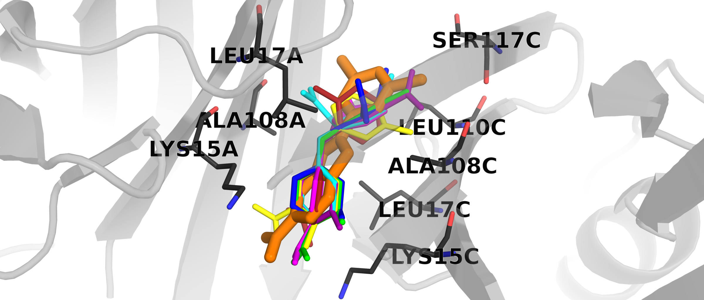
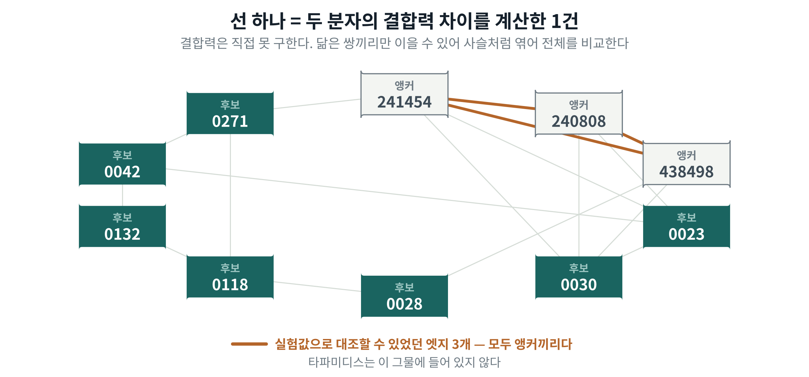
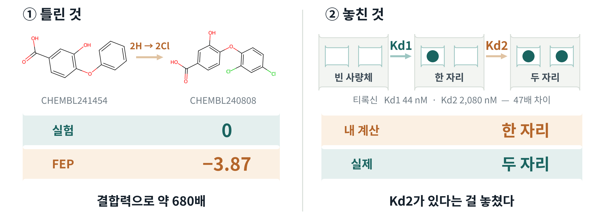

환경 화학물질의 TTR 결합 데이터로 세운 QSAR 모델과 생성 모델 3종으로 58,940종을
설계해 7종을 선별했고, 일곱 모두 승인약 타파미디스와 같은 결합 자리를 점유했다.
다만 자유에너지 계산이 답이 0인 대조 조합에서 −3.87 kcal/mol을 내놓아
후보 간 순위 판정에 미달하므로 순위는 보고하지 않는다.
01표적
TTR 사량체가 해리되면 단량체가 응집해 ATTR 아밀로이드증으로 진행한다
사량체 중앙을 관통하는 티록신(T4) 결합 통로를 점유하면 해리가 억제된다 —
동역학적 안정화
승인약 타파미디스·아코라미디스가 모두 이 기전으로 작용한다
같은 통로에 환경 화학물질도 결합한다 — 그쪽에서는 갑상샘 교란 독성으로
분류된다

사량체 중앙의 T4 결합 통로 — 승인약과 환경 화학물질이 공유하는 자리.
02착안 — 독성 데이터를 치료제 설계로

2024년 Tox24 Challenge가 공개한 EPA 시험 화학물질 1,512종의 TTR 결합
데이터를 치료제 후보 설계에 역으로 사용했다.
03설계와 선별

DiffSBDD포켓 모양을 보고 분자를 만든다
Pocket2Mol포켓 안에 원자를 하나씩 붙인다
REINVENT점수를 주고 강화학습으로 맞춰간다
남은 7종의 Murcko 골격은 전부 동일(다이페닐 에터)하다 — 다만 환경 화학물질로
학습한 모델이므로 해당 계열로의 수렴은 예상된 결과다.
여덟 종까지 좁힌 뒤 pH 7.4에서 전하가 −2였던 한 종을 제외해 −1로 통일했다.
전하가 다르면 비교 조건이 달라지기 때문이다.
04최종 후보 7종

LYS15와 염다리 형성 — 4종
0023 · 0030 · 0042 · 0271
형성하지 않음 — 3종
0028 · 0118 · 0132
번호는 선별 단계의 식별자이며 결합력 순위가 아니다.
결합 양상이 두 갈래로 갈려 양쪽을 모두 후보에 남겼다.
05구조 확인

타파미디스(주황)와 최종 후보 7종의 중첩. 동일 통로에 동일 방향으로
결합하며, 접촉 잔기 8개가 모두 겹친다.
87종이 모두 접촉한 공통 잔기
16 : 11–14타파미디스 : 후보 접촉 수
접촉 수는 승인약이 더 많다.
개수만으로 결합력의 우열은 판단할 수 없다.
06결합력 계산

4,269회선 하나를 수십 단계로 쪼개 돌린 횟수 (45쌍 중 17쌍)
14일 · GPU 7대동시에 돌린 최대 구성
2 / 17다시 돌려 값이 재현된 쌍
자유에너지 섭동(FEP) — GROMACS λ-HREMD · pmx · MBAR
07검증과 한계

두 사유로 후보 간 순위는 보고하지 않고
7종 전부를 실험 검증 대상으로 넘겼다.
08추후 과제
승인약과 직접 비교하기
타파미디스와는 구조만 비교했다. 계산에 함께 넣어 결합력을 맞붙여 봐야 한다.
계산 오차의 원인 찾기
답을 아는 세 조합의 오차가 −3.87 / +2.53 / −2.09로 제각각이다.
한쪽으로 치우친 게 아니라서 빼서 맞출 수도 없다. 원인을 찾고 다른 계산법으로도 재본다.
두 번째 결합 자리 계산하기
한 자리가 찬 상태에서 두 번째 분자를 넣는 계산을 따로 돌리면 Kd2를 얻는다.
합성하고 실험으로 확인하기
합성 경로를 짜고, 실제로 만들어 TTR 결합과 섬유 생성 억제를 측정한다.